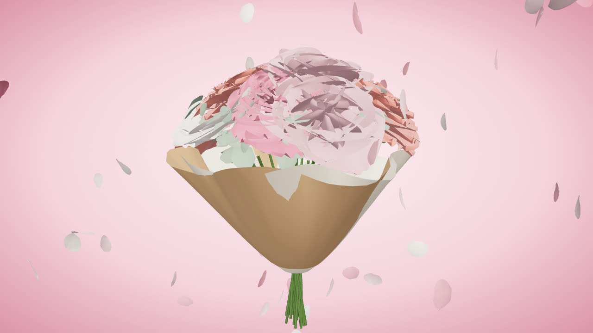

01
Bodas en Mérida
Ramo de novia, prendidos, iglesia y banquete. Hemos vestido bodas en la concatedral de Santa María, en el Parador y en fincas de Las Vegas Altas. Primera cita con prueba de flor sin coste.
Ramo de novia desde 120 €
Concepto Floristería ficticia: ejemplo de web interactiva 3D diseñada por Daniel Durán.
Quiero una web así
Floristería de autor · Mérida · desde 2009
Ramos de temporada montados a mano en la calle Santa Eulalia. Diseña el tuyo en 3D y te lo llevamos en 2 horas a cualquier punto de Mérida.
Hoy en el taller
Cuatro ramos que salen cada mañana con la flor que llega del mercado. Pulsa uno y lo cargamos en el diseñador para que lo cambies a tu gusto.
Arrastra para girar
Vídeo interactivo
Ocho segundos que en el taller son tres días. Dale al play, salta de capítulo o arrastra sobre el vídeo para abrir y cerrar la peonía a tu ritmo.
Animación 3D: una peonía rosa se abre desde el capullo, después se suman más flores y eucalipto y el ramo termina envuelto en papel kraft con un lazo amarillo.
Calendario de flor
Trabajamos con flor de temporada porque dura más, viaja menos y cuesta menos. Toca un mes para ver qué hay en el taller.
Más allá del ramo
01
Ramo de novia, prendidos, iglesia y banquete. Hemos vestido bodas en la concatedral de Santa María, en el Parador y en fincas de Las Vegas Altas. Primera cita con prueba de flor sin coste.
Ramo de novia desde 120 €
02
Un ramo de temporada en casa o en la oficina cada semana o cada quince días. Lo pausas cuando quieras.
Desde 29 € / semana
03
Recepciones, mesas de congreso, escaparates y el Festival de Teatro Clásico: centros que aguantan una semana de calor emeritense.
Presupuesto en 24 h
04
Coronas, centros y ramos para el tanatorio, con entrega directa y con todo el cuidado. Llámanos a cualquier hora.
Atención 24 h
05
Dos horas para aprender a montar un ramo en espiral y llevártelo a casa. Grupos de ocho, con café y flor incluidos.
45 € por persona
El taller
Lucía Tovar abrió Pétalo & Musgo en 2009 en un antiguo almacén de la calle Santa Eulalia, a dos pasos del Templo de Diana. Empezó con un mostrador y una cámara de frío de segunda mano; hoy somos cuatro floristas y una bici de reparto.
Compramos dos veces por semana en el mercado de flor y, en temporada, a viveros de la comarca: lavanda de La Serena, olivo de Tierra de Barros y peonía de un vivero de Badajoz. Nada de espuma floral: agua, alambre y musgo que reutilizamos.
Lo que dicen
«Pedí a las cinco un ramo para mi madre y a las seis y media estaba en Nueva Ciudad. La foto que me mandaron antes de salir es un detallazo.»
«Lucía entendió nuestra boda a la primera: olivo, lavanda y peonía blanca. El ramo duró diez días en un jarrón.»
«Tengo la suscripción quincenal para la consulta y los pacientes preguntan cada vez por las flores.»
* Negocio ficticio: reseñas y cifras de ejemplo.
Sí. Si pides antes de las 18:00 de lunes a viernes (12:30 el sábado), te llevamos el ramo en 2 horas a cualquier punto de Mérida por 5 €. A Calamonte, Trujillanos y Valverde de Mérida, 9 €.
Entre 5 y 10 días según la flor. Cambia el agua cada dos días, corta el tallo en diagonal un centímetro y aleja el jarrón del sol directo y de la fruta.
No. Montamos con agua, rejilla de alambre y musgo reutilizable. La espuma floral es un microplástico que no se degrada.
Siempre. Te mandamos una foto por WhatsApp cuando está terminado; si quieres cambiar algo, lo cambiamos.
Visítanos
06800 Mérida (Badajoz) · a 3 minutos del Templo de Diana
Dirección ficticia para esta demo.
| Lunes | 9:30–14:00 · 17:00–20:30 |
|---|---|
| Martes | 9:30–14:00 · 17:00–20:30 |
| Miércoles | 9:30–14:00 · 17:00–20:30 |
| Jueves | 9:30–14:00 · 17:00–20:30 |
| Viernes | 9:30–14:00 · 17:00–20:30 |
| Sábado | 9:30–14:30 |
| Domingo | 10:00–13:30 |
El mapa es de OpenStreetMap, un servicio externo. Solo lo cargamos si nos dejas.